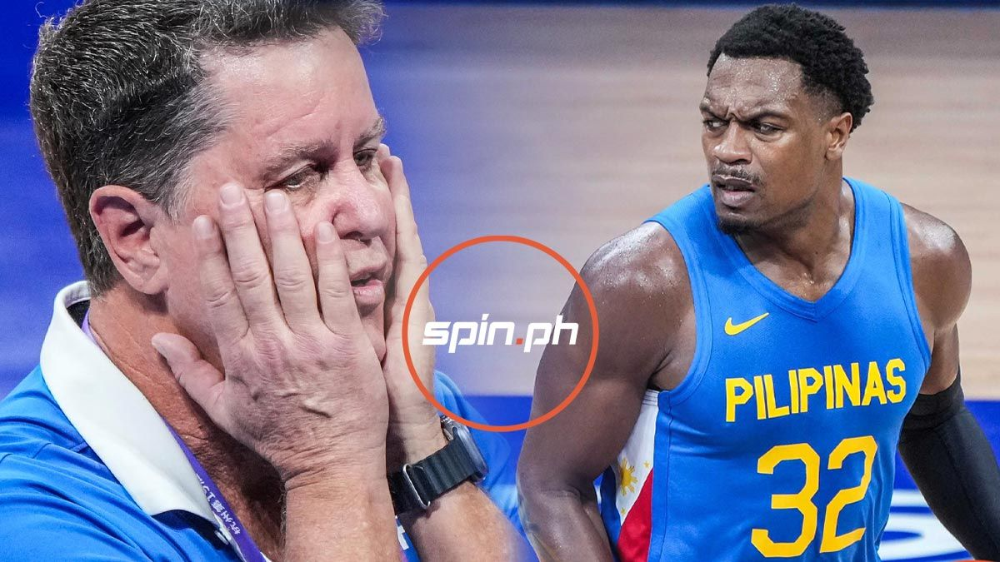

Cone says positive test came as a complete shock for Brownlee
Brownlee, who tested positive for a banned substance called Carboxy-THC, was equally surprised, according to Cone.
"First of all, it was a real shock. We didn’t know anything until a couple of days later when we returned to the country," Cone said to CNN Philippines.
"I remember we were having a post-game dinner and we were all waiting for Justin (Brownlee) and Calvin (Oftana) to come to the dinner because they were left behind at the stadium because they were the ones selected to be randomly tested. We waited two to three hours for them to show up, but we had no clue that anything was going to happen at that point," he added.
by JOHN MARK GARCIA, spin.ph
OCT 30, 2023